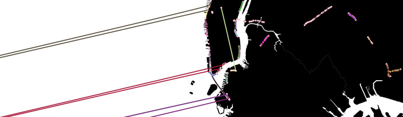

See the final product here
I stumbled on a feed of traffic speeds provided by New York City Department of Transportation (DOT) and had fun getting a visualization running using Mike Bostock's excellent D3. Though a small project, I was both surprised and pleased to face difficulties and design decisions that are typical of larger systems and also have fun with past and present interests.
Because I need to poll a remote service that doesn't have CORS enabled, I'm restricted by the same-origin policy of browsers and can't poll the service from the browser client. I had planned to have everything hosted on Github to avoid headaches (it's free! uptime almost-all-the-time!), but now I realized I needed to run a service to serve as a proxy between the DOT server and the browser. But wait -- I could still use Github! I could use my laptop to poll the DOT service, pipe to a file, commit, and push. Which is exactly what I ended up doing:
Firstly, I initially tried to convert a shapefile I acquired from NYC Open Data to GeoJSON, but could never get it to work. After two nights of reading Stack Overflows and exploring dense ogr2ogr documentation, I found Derek Willis of the Times had already made NYC maps available, so I Curled that and went on my way. I mention this to others who may stumble on this; it will become a project in itself to learn the motivations of ogr2ogr and nomenclature of projections, and aimless experimentation will be rewarded with a blank canvas, so don't commit lightly!
The DOT service provides a TSV (not CSV as listed) with sensor path information and speed on that path. Check out the head of a typical response: The official description of the DOT data can be found here. The path is encoded twice; once as a series of human readable lat-longs, and a second time as a Google Polyline.
Parsing the lat-long string, I found many well-traveled bridges that, until now, I never knew of.
Decoding the Google Polyline instead removed the spurious points and these phantom bridges. The Polyline encoding is clearly better than the string of lat-longs, and though it's hard to say exactly why, I have three immediate reasons:
I do concede though that human-readable formats make play much more possible; HTTP 1.1 is great fun to work with, and I think a lot of that comes from not having the level of indirection that a non-human-readable format would add.
... in space: When drawing the path, I choose not do make a linear interpolation between the sensor points, but a B-spline interpolation to get a smooth, not jagged, path.
... in time: Querying the DOT service and immediately updating the map resulted in a small explosion of activity that quickly diffused with fast cars leaving the map quickly and slow cars persisting. A simple solution was to have a global queue in which the batch of updates are queued; with a small time interval, updates are dequeued. If the queue is exhausted, a call is made to refill it. Even though the average of updates in time is the same, the variance in time is smaller, as they are now uniformly spread in the time interval, instead of an impulse.
That Javascript's arrays can easily be used as a stack reminded me of a nice data structure that I first met in Okasaki's Purely Functional Data Structures: the purely functional queue represented as two stacks.
Here are implementations in Clojure, OCaml, and, non-functionally, Javascript:
The nice invariant preserved is that the queue is empty if and only if the front stack is empty. I can't remember if this was in Okasaki or not, but this simplifies the logic greatly.
I mentioned a feature of the map earlier, that cars tend to be either fast or slow, either fleeting or persistent. This seems to be common in computer systems, and moreover, systems typically know which camp you fall in before you go about your business. HPC clusters often have fast and slow queues to process tasks, and in a different context, Mesos frameworks tend to want to be either a Jehovah's witness or immortal. This is a feature of the system I wanted to preserve--that the map had a milky way but not at the expensive of its shooting stars. There was a risk that the slow cars wouldn't finish their journey quickly enough, and the number of objects and dom elements being updated would just be too much for my puny browser. Thankfully, the arbitrary parameters I choose to drain the queue seem to do the job, but if they hadn't, my next step would have been to have two queues, slow and fast, and drain these, each at different rates, and possibly dependent on how many cars were already on the map.
Lastly, there were two places I played with randomness. Initially, I jittered (ie, add a small amount of noise to the x- and y- coördinates to) the path points so that cars wouldn't overlap, but when I moved to such small cars, this wasn't an issue, and with larger numbers of paths on my screen, for some reason, the jittering contributed to my browser freezing. Secondly, to ensure order of the cars' appearances was not repetitive, I shuffled the batch before I queued them.